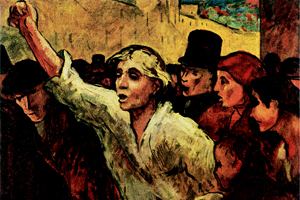
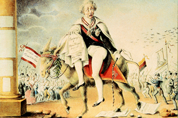
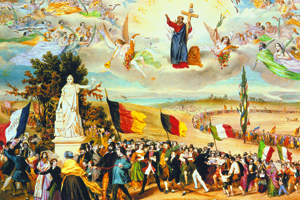

Lezione 16  L'Unità d'Italia
L'Unità d'Italia

-
279
210
-
230
200
-
275
370
-
320
220
-
315
265
-
410
340
-
305
300
-
295
325
-
335
285
-
335
315
-
365
340
-

PARIGI
Lo spietato realismo dell'artista francese Honoré Daumier, soprannominato "Il Michelangelo della caricatura" restituisce molto bene in questo dipinto il clima di entusiasmo e di rabbia delle rivolte parigine del 1848.
-

LONDRA
La precipitosa fuga a Londra del cancelliere austriaco Metternich raffigurata in un'illustrazione satirica popolare che lo dipinge a cavallo di un asino, impotente e spaventato nella sua goffa e ridicola eleganza.
PRAGA
I moti rivoluzionari a Praga nel 1848 vengono duramente repressi dagli Asburgo: i militari trionfano sui rivoltosi dopo sei giorni di sanguinosa guerriglia urbana, con l'erezione di barricate e numerosi morti e feriti.

FRANCIA
Un'efficace quanto ingenua incisione colorata del francese Frederic Sorrieu illustra il clima di visionaria utopia politica e sociale che era alla base dei moti rivoluzionari europei del 1848: tutte le nazioni sfilano con i loro vessilli in un unico corteo mentre nel cielo campeggia il motto "Fraternità".TORINO
Il 4 marzo 1848 Carlo Alberto concede lo Statuto albertino, una carta costituzionale "ottriata", cioè concessa dall'autorità sovrana. Questo stesso statuto sarà esteso nel 1861 all'Italia unita: è la prima forma di costituzione dell'Italia Unita.
Nell'immagine ne vediamo il frontespizio: la cornice riccamente decorata e l'immagine del sovrano racchiusa da un'iniziale richiamano una pagina miniata del Medioevo o del primo Rinascimento.SICILIA
E' in Sicilia la prima agitazione del '48 europeo. Per breve tempo l'isola diventa indipendente. Durante questo anno in tutta Europa ci sono vere e proprie rivoluzioni: Parigi, Germania, Austria, Italia settentrionale, Boemia Ungheria.MILANO
Nel marzo del '48 i cittadini di Milano capeggiati da Carlo Cattaneo riescono a riportare una vittoria sull'esercito austriaco di Radetsky nelle cosiddette "cinque giornate di Milano".QUADRILATERO DIFENSIVO NEL LOMBARDO-VENETO
L'esercito austriaco in fuga da Milano si rifugia nella zona fortificata tra Legnano, Verona, Mantova, Peschiera del Garda, detta "quadrilatero".
Qui l'esercito austriaco viene attaccato anche dalle truppe piemontesi guidate da Carlo Alberto.
Nel 1848, a Goito, le truppe piemontesi affiancate da truppe papali, truppe del Regno di Napoli e volontari toscani sconfiggono gli austriaci. A Custoza, nel luglio 1848, le truppe austriache ricevono rinforzi e conseguono una vittoria.NOVARA
Nel 1849 si ha un'ulteriore vittoria dell'esercito austriaco. Il fronte unitario dei vari eserciti italiani si sfalda.VENEZIA
Una rivolta, guidata da Daniele Manin e Niccolò Tommaseo porta alla rinascita della Repubblica di Venezia, che però ha vita molto breve perché viene riconquistata dagli austriaci.ROMA
1849: a Roma le rivolte danno origine alla Repubblica romana, retta da un triumvirato di cui fa parte Mazzini, che estromette il papa dal governo temporale della città.
Dopo soli sei mesi l'esercito francese interviene in difesa del papa.